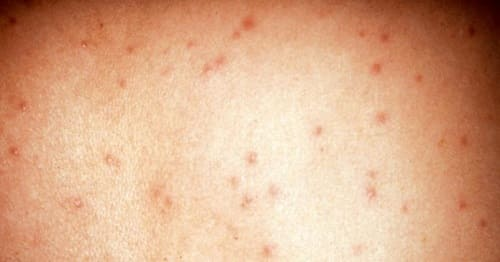
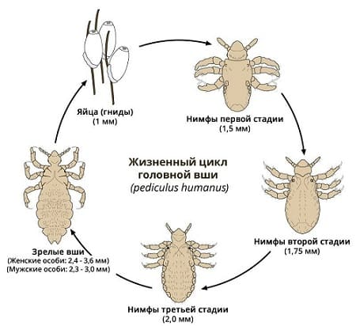
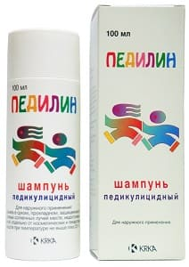

Не очень прилично звучащее русское слово «вшивость» в переводе на медицинский язык и есть педикулез, что, в свою очередь, тоже не слишком ласкает слух (pediculus – по-латыни это и есть вошь).
Вши – это особый отряд кровососущих насекомых, которые выбирают для своего существования строго определенные виды животных, проще говоря, у вшей узкая специализация. Свиная вошь обожает домашних свиней, бычья – крупный рогатый скот. Представители вшивого семейства не обошли вниманием и человека.
Наиболее известны три вида вшей – лобковая, головная и платяная. Вши передаются от человека к человеку бытовым путем через загрязненные вещи и при особо тесном контакте (например половом). Попадая на кожу, вши сосут кровь и лимфу, чем и питаются. Неудивительно, что в местах укусов появляется зуд. Тщательное расчесывание нередко приводит к инфицированию бактериями и гнойничковой сыпи.
Самки вшей ежедневно откладывают от 5 до 15 яиц, которые называют гнидами (звучит опять-таки неприлично). Взрослая мама-вошь приклеивает гнид к волосам или к белью, а через 15–17 дней появляются юные вошки.
Вшивость – болезнь социальная, отражает состояние общества в целом и напрямую связана с соблюдением правил личной и общественной гигиены: вовремя мыться-умываться, менять белье, следить за порядком в банях и парикмахерских и т. д.
Вшивость опасна не столько зудом, который представляет собой всего лишь индивидуальную неприятность отдельно взятого чухающегося субъекта, сколько тем печальным фактом, что вши являются переносчиками целого ряда исключительно опасных инфекционных заболеваний – сыпного и возвратного тифа, волынской лихорадки.

В основе профилактики вышеуказанных инфекций и лежит борьба с педикулезом, ибо без вшей сыпного тифа не бывает.
Суть борьбы с педикулезом – осмотры, особенно в детских коллективах (обнаружение самих вшей и гнид), ну и, разумеется, соблюдение совершенно очевидных гигиенических правил.
Установление факта педикулеза требует незамедлительного лечения.
Лечение не требует глотания никаких таблеток, применяются исключительно наружные средства, выбор последних довольно велик, и в любой аптеке вам хоть что-нибудь да предложат. Эффективность противопедикулезных средств высока, а цена конкретного лекарства определяется страной-производителем и эстетическими требованиями покупателя. Имеются препараты с запахом, неприятным не только для вшей, но и для человека, но при желании несложно купить заморское чудо, ничем не отличимое от обычного шампуня.
Вполне очевидно, что, обнаружив на себе или на своем ребенке вшей или гнид, несчастный страдалец, скорее всего, к врачу не побежит. Нет, если побежит, то врач, разумеется, и диагноз поставит, и надлежащее средство порекомендует. Но поскольку так бывает далеко не всегда, приведем перечень препаратов, ибо педикулез относится к тем человеческим болезням, когда уж лучше самолечение, чем распространение вшей.

БЕНЗИЛБЕНЗОАТ – 20 % эмульсия для взрослых и 10 % эмульсия для детей. Эмульсию взбалтывают, ватным тампоном наносят на волосы, слегка втирая в кожу. После процедуры голову неплохо замотать косынкой. Через 30 минут моются проточной водой с шампунем, а волосы расчесывают для удаления погибших вшей.
НИТТИФОР – раствор во флаконе. Обильно смачивают не разведенным раствором (все, как и в случае с бензилбензоатом, – марлевый тампон, косынка). Шампунь и проточная вода – через 40 минут.
Другие препараты (везде есть инструкции, разобраться несложно):
ПЕДИЛИН, он же МАЛАТИОН, АНТИ-БИТ, РИД, ИТАКС, СИФАКС – шампуни.

ПАРА ПЛЮС – аэрозоль для лечения педикулеза волосистой части головы.
СПРЕЙ-ПАКС – аэрозоль для лечения лобкового педикулеза.
НОК – крем-шампунь.
Приведенный перечень вполне достаточен для победы над вшивостью, чего всем пострадавшим очень хочется пожелать.
Е.О.Комаровский. "Здоровье ребенка"